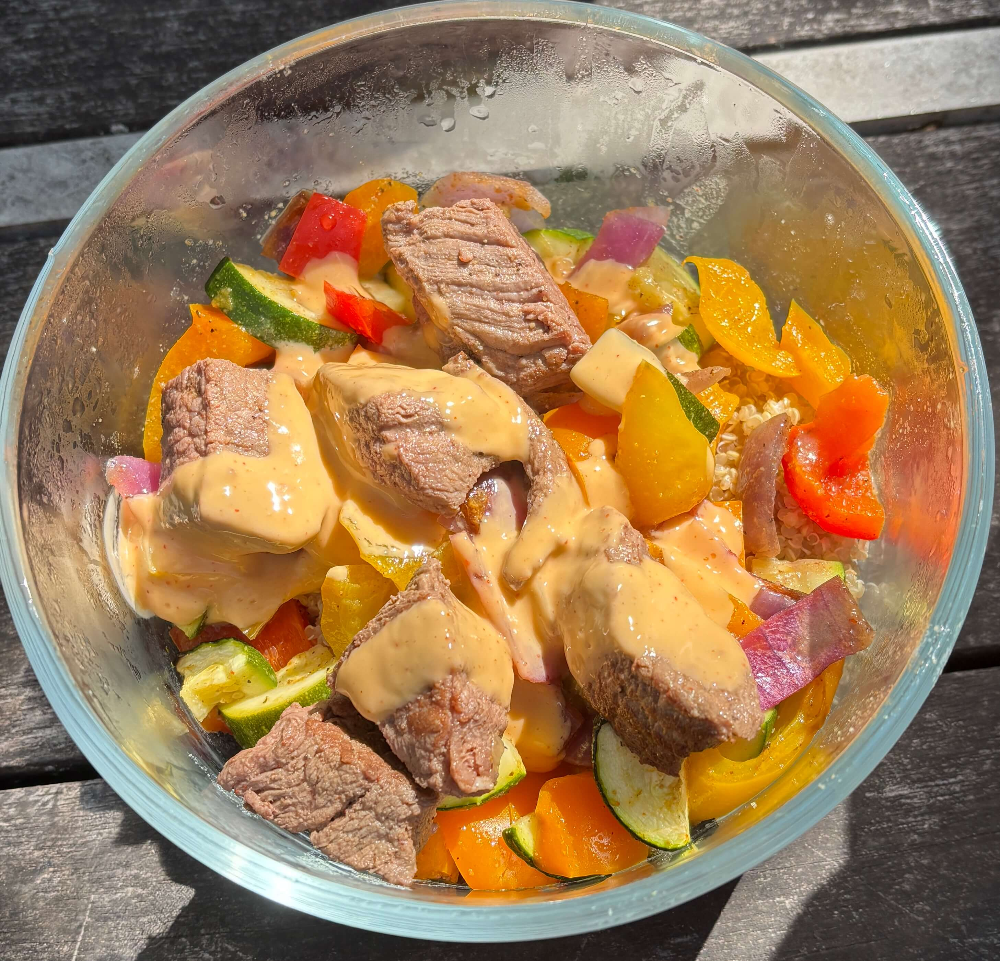

Home
Chipotle Steak Bowl

9 servings
Ingredients
- 2 lbs cut into 1 inch sirloin steak cubes
- 3 cups dry quinoa (roughly 9 cups cooked)
- 4 medium zuchinis cut into half moons
- 4 large (red and yellow) bell peppers diced
- 3 tbsp olive oil
- 2 tbsp garlic powder
- 2 tbsp smoked paprika
- 1.5 tbsp ground cumin
- salt and black pepper to taste
- Chipotle sauce
If homemade chipotle sauce
- 1.5 cups greek yogurt or sour cream
- 3-4 chipotle peppers plus 3 tbsp adobo sauce from the can
- 3 cloves garlic
- 3 tbsp lime juice
- 1 tsp salt
- Water if you want the sauce thinner
Steps
- Rinse 3 cups of dry quinoa in a fine-mesh strainer. Cook in a rice cooker or in a large pot bringing to a boil, reducing heat to low, then covering and letting it simmer for 15 minutes. Fluff with a fork and let it cool.
- Preheat the oven to 425F. Sheet-pan roast the zuchini, bell peppers, and red onions tossed with 3 tbsp olive oil, garlic powder, salt, and pepper for 20-22 minutes until tender and slightly charred.
- If you are making chipotle sauce homemade then blend the ingredients together and store in a seperate squeeze bottle or container.
- Pat teh sirloin dry with a paper towel and toss with paprika, cumin, salt, and pepper. Heat a large skillet over medium high heat with oil. Sear in batches so not to overcrowd the pan and the meat browns instead of steaming it.
- Divide the quinoa, roasted veggies, and steak evenly among 9 bowls.